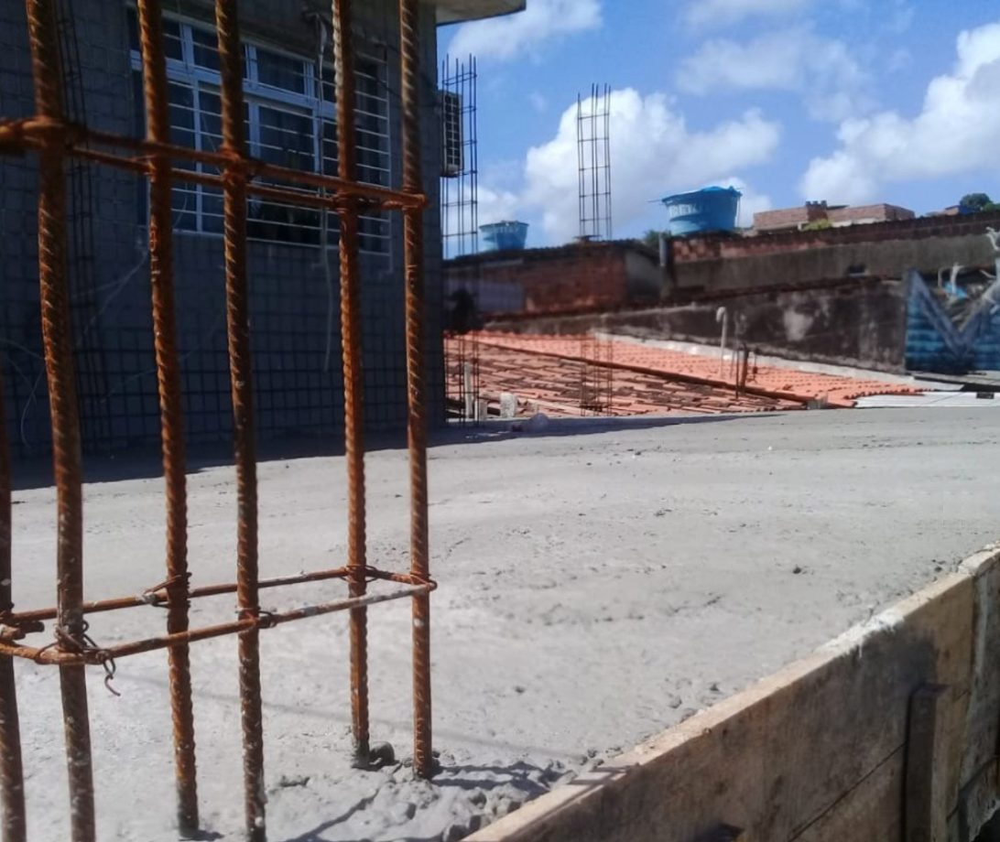
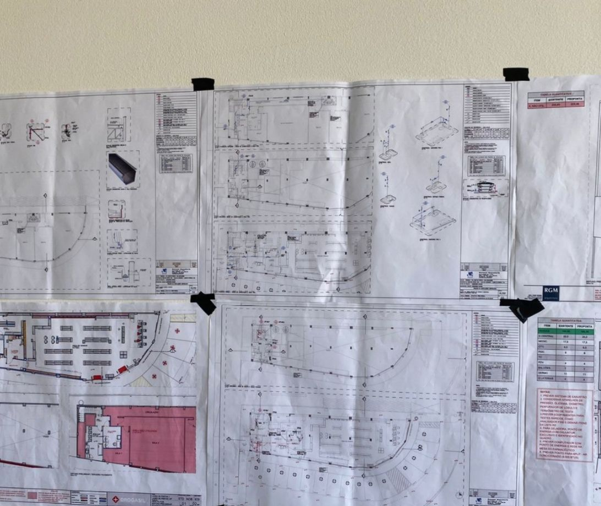
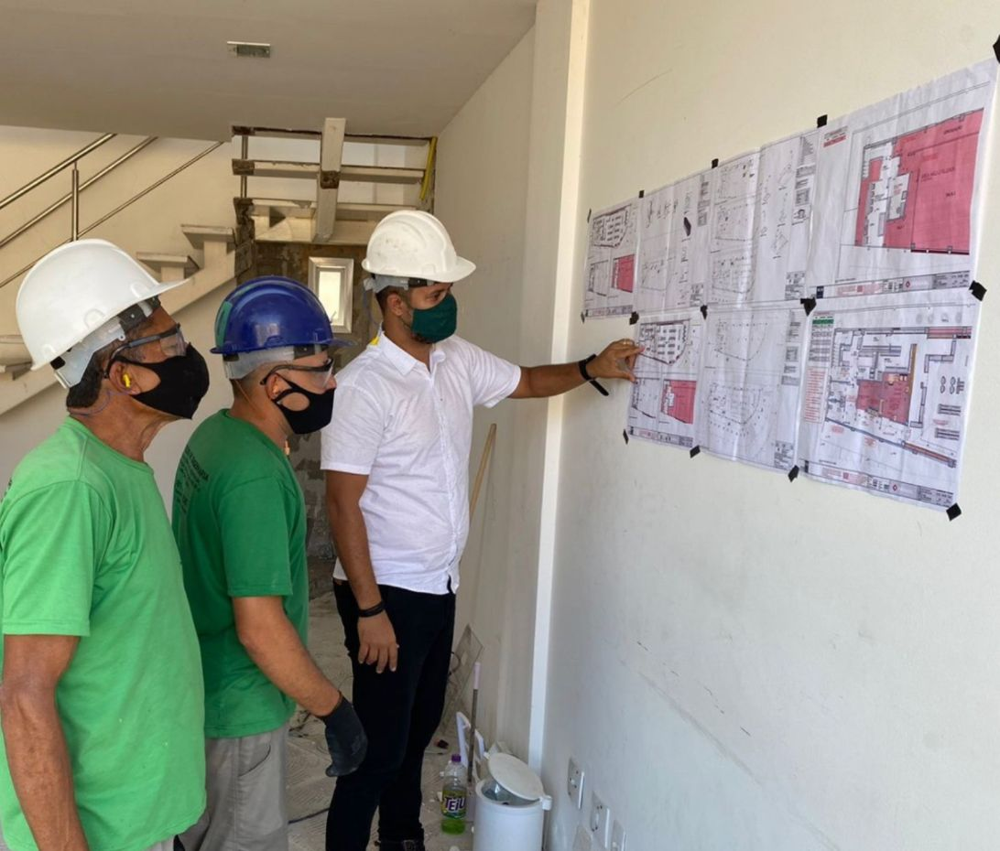
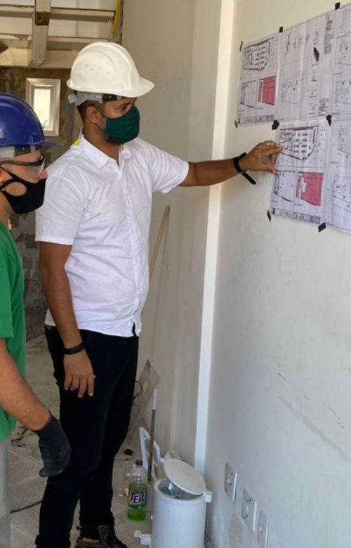
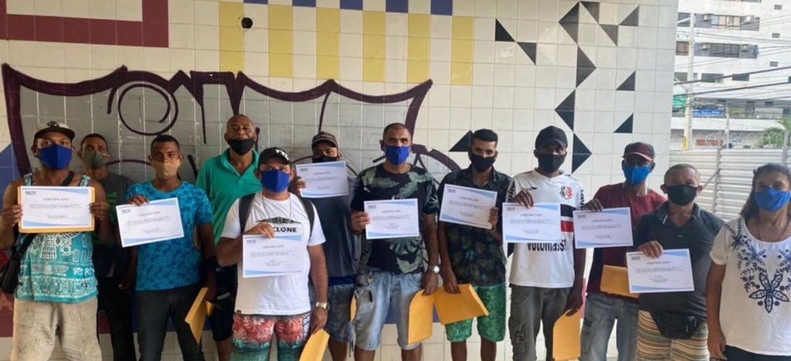

01
Visita técnica
O engenheiro vai até o imóvel, entende o que você quer e avalia o que existe: estrutura, instalações e limitações.

Construção, reforma e ampliação de imóveis residenciais e comerciais, com o engenheiro civil João Melo à frente de cada obra, da fundação à entrega.
Toda obra começa com um sonho e termina com uma entrega. Entre um e outro existe engenharia.
A Farias de Melo Engenharia constrói, reforma e amplia imóveis residenciais e comerciais. Da primeira casa de uma família à loja de uma rede nacional de farmácias.
Cálculo, planejamento, equipe própria e um responsável técnico que responde por cada etapa. É isso que entra em cada canteiro.

Casas e apartamentos, da fundação ao acabamento, com orçamento previsível e acompanhamento do início ao fim.
Reformas e ampliações de lojas, com cronograma pensado para cumprir o padrão da marca e a operação seguir funcionando.
Avaliação técnica antes de mexer em paredes, pisos e instalações, para adaptar o imóvel sem surpresas no meio do caminho.
Um único contrato para resolver a obra inteira. Você fala com quem decide, e quem decide está no canteiro.
Fundação, estrutura em concreto armado, lajes, alvenaria e acabamento.
Banheiros, cozinhas, áreas molhadas e reformas completas de casas e apartamentos.
Lojas, farmácias e pontos comerciais, inclusive redes com padrão de marca a cumprir.
Novos pavimentos, pilares, vigas e lajes com a solução técnica adequada a cada projeto.
Demolições controladas, hidráulica, elétrica, pisos e revestimentos.
Visitas técnicas, laudos, orçamentos detalhados e responsabilidade técnica pela obra.
Cinco etapas que transformam uma ideia em imóvel entregue, sem improviso e sem conta surpresa no final.
O engenheiro vai até o imóvel, entende o que você quer e avalia o que existe: estrutura, instalações e limitações.
Solução técnica definida e orçamento detalhado por etapa. Você sabe o que vai pagar antes do primeiro tijolo.

Cronograma, compra de materiais e sequência de serviços organizados para a obra não parar.
Equipe própria, treinada e com EPI, sob acompanhamento direto do engenheiro responsável.
Vistoria final com você, ajustes concluídos e o imóvel pronto para morar ou abrir as portas.
Obras residenciais e comerciais executadas pela equipe Farias de Melo, em Pernambuco e fora do estado.
Retoque completo da fachada, manutenção das partes da construção desgastadas pelo tempo e nova sinalização do estacionamento. A empresa também executou reforma e ampliação de unidade da rede em Itabuna, no sul da Bahia.
Pilares, vigas e laje executados com acompanhamento técnico em cada etapa crítica.
Equipe uniformizada e com EPI, trabalhando conforme o projeto aprovado.

Engenheiro civil e responsável técnico da Farias de Melo Engenharia. Para ele, obra se resolve no canteiro, com presença, e não por telefone.
É ele quem faz a visita técnica, aprova a solução, acompanha a execução e entrega a obra. Conduz desde reformas residenciais em Recife até obras comerciais para redes de varejo em outros estados, com o mesmo padrão de exigência. Corredor de longa distância, leva para o canteiro a disciplina de quem treina do 5 km à maratona: constância, planejamento e nenhuma etapa pulada.

Os profissionais da Farias de Melo passam por capacitação antes de entrar na obra. Quem executa sabe o porquê de cada etapa, e isso aparece no acabamento.
O responsável técnico acompanha a obra de perto, e não apenas assina o projeto.
Profissionais capacitados, uniformizados e trabalhando com equipamento de proteção.
Escopo e custos detalhados por etapa antes de começar. O combinado é o executado.
Cada técnica é escolhida pelo que o projeto exige e explicada para você decidir com segurança.
Às vezes o baratosai caro. Escolhaa qualidade.
Conte o que você quer construir ou reformar. O engenheiro João Melo responde pessoalmente e agenda a visita técnica.